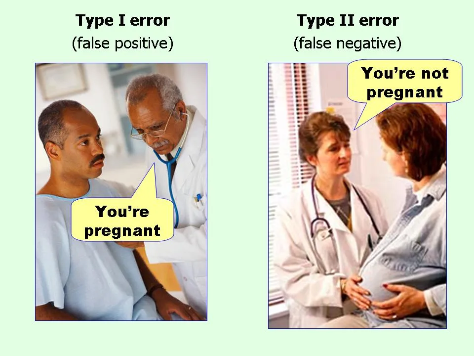

In this chapter, you will learn about why it is important to adjust p-values and confidence intervals when we are comparing more than two groups. You will also learn about familywise error rates and false discovery rates. Finally, you will learn about methods to deal with multiple comparisons. To do so, we will again use the pew.csv data to examine whether American’s news knowledge differs based on the source of their news.
To begin, we will load several libraries and import the data into an object called pew. We will also fit one of our regression models that allowed us to examine differences in knowledge based on news source, after controlling for differences in age, education level, amount of news consumed, and political engagement.
# Fit model (None is reference group)lm.none.2=lm(knowledge ~1+ age + education + news + engagement + com + con + lib, data = pew)
20.1\(\alpha\)-Level and Errors
Recall that when we evaluated the difference between each pair of news sources, we did so by comparing the p-value to our \(\alpha\)-level of 0.05. Remember also that the alpha-value is determined by the researcher and determines the Type I error rate for the study, where a Type I error is the probability of rejecting the null hypothesis if it is really true. In our study, this would mean we claim there is a difference in news knowledge between two news sources, but there really isn’t.
Remembering Type I and II errors…simplified by Flowing Data.

One way to think about a Type I error is that it represents a false discovery. The data have mislead the researcher into saying there is an effect when in fact there isn’t. When we use an \(alpha\)-level of 0.05, we are saying that we are OK making a false discovery in 5% of the hypothesis tests we will ever evaluate.
Imagine a researcher who evaluates 1000 hypothesis tests during their career. Let’s imagine also that this researcher always does a sample size analysis prior to every research project and always has a large enough sample size to have statistical power of 0.8, a commonly used value in the social and educational sciences. (That is they would be able to detect a true effect 80% of the time that there actually is an effect.) Lastly, let’s assume that half of all the hypothesis that this research evaluates are in reality true1. If this researcher always used an \(alpha\)-value of 0.05, then:
Of the 1000 tests, they would be able to detect 400 true effects which could be written about in manuscripts.
Of the 1000 tests, they would make 50 false discoveries—that is they would publish about a false claim 50 times in their career.
Think of how many hypothesis tests you will carry out in your career, it will likely be more than 1000, and 5% of those will be false discoveries! This is alarming, but is expected when we use an \(alpha\)-value of 0.05. What is more alarming is that if you only consider the 450 “publishable” hypotheses (i.e., those for which you found an effect, including the false discoveries), the false positive rate is about 11%. This is much higher than the advertised 5% rate.
20.1.1 Multiple Tests on the Same Data
When a researcher carries out multiple hypothesis tests on the same data, it turns out that the probability of making false discoveries gets higher than value we set for \(\alpha\). This is especially problematic when researchers are coming at the data without any a priori hypotheses to be tested, which are generally based on relationships identified in the theoretical literature. Statisticians refer to this as taking an Exploratory Approach with hypothesis testing.2 Another way to think about the exploratory approach is that the researcher is “data dredging”—they are testing a lot of different effects to see what pops.
Another common situation in which the probability of making false discoveries gets higher than value we set for \(\alpha\) is when researchers have multiple groups that they are testing differences between. This is exactly the situation we have in our news knowledge study! In our study we had eight different groups that we were evaluating differences between. Having multiple groups that you are comparing leads to higher than specified rates of false discovery regardless of whether the approach is exploratory or confirmatory.
Whalley (2018) offers a nice metaphor about buying lottery tickets to help you understand why testing differences between multiple groups increases the number of false discoveries. He writes, “if you buy more tickets you have a larger change of winning a prize. [For example], with three comparisons between the groups (tickets) we have a 15% chance of winning a prize, rather than the 5% we intended.” That is, mathematically, we can think about the false positive rate as a function of the number of hypothesis tests you conduct. Specifically,
If you were only doing one test, the false positive rate would be 0.05, our designated \(\alpha\)-value. For three tests, the false positive rate would be \(3\times.05=.15\), much higher than the designated \(\alpha\)-value. For our news knowledge example, we carried out 6 tests. The false positive rate in our study is \(6\times.05=.30\)!
20.2 Fixing the Problem
There are two approaches to fixing this problem: (1) controlling for the familywise error rate, and (2) controlling for the false discovery rate. Both of these methods, in practice, involve penalizing the size of the p-value (making it bigger) based on the number of tests you are evaluating. We refer to this as “adjusting the \(p\)-values”.
20.2.1 Controlling the Family-Wise Error Eate
The first approach for adjusting \(p\)-values is to control for the familywise error rate. The familywise-error rate is defined as the probability of making AT LEAST ONE Type I Error in all of the hypothesis tests that you are evaluating. As an example consider a situation in which we were conducting hypothesis tests to evaluate pairwise differences in three groups, A, B, and C. We would be carrying out the following hypothesis tests:
Hypothesis Test 1: A vs. B
Hypothesis Test 2: A vs. C
Hypothesis Test 3: B vs. C
You could make a Type I error in HT 1, in HT 2, or in HT 3, respectively. You could also make a Type I error in HT 1 and HT 2, but not in HT 3. Or, you could make a Type I error in HT 1 and HT 3, but not in HT 2. Or, you could make a Type I error in HT 2 and HT 3, but not in HT 1. Or, you could make a Type I error in all three tests! In controlling for family-wise error, we would want the total error rate across all of those possibilities to be no more than our \(\alpha\)-value (We would refer to this as the family-wise \(\alpha\)-value or \(\alpha_{\mathrm{FW}}\)). Mathematically,
Most social and educational scientists who take this approach set their family-wise error rate to 0.05.
20.2.1.1 Dunn-Bonferroni Adjustments
An Italian mathematician named Carlo Emilio Bonferroni generalized a finding from probability theory (Boole’s inequality) to determine the upper bound on making a Type I error in k tests (Dunn, 1961). (k here refers to the number of tests.) Statistician Olive Jean Dunn developed the mathematical details of using Bonferroni’s results and was the first to apply them to the problem of multiple comparisons. This inequality is:
where \(\alpha_{\mathrm{PC}}\) is the alpha level for each test (the per-comparison alpha value), and k is the number of tests (comparisons) for the effect. This is where the shortcut of multiplying the number of tests by the \(\alpha\)-level comes from; it is an approximation for this inequality. That is,
That means, if we want our family-wise error rate to be 0.05, we can set this to be equal to 0.05 and solve for the \(\alpha_{\mathrm{PC}}\) based on the number of tests be evaluated. In our news knowledge example, there are 28 different tests we are evaluating. So to determine the per-comparison alpha value, we would need to solve the following:
\[
\begin{split}
6 \times \alpha_{\mathrm{PC}} &= 0.05 \\[2ex]
\alpha_{\mathrm{PC}} &= \frac{0.05}{6} \\[2ex]
&= 0.008
\end{split}
\] That is, rather than comparing the p-value we got to 0.05, we should have been comparing the p-value to 0.008.
In practice, we don’t adjust the \(alpha\)-value, but instead adjust the p-value. The easiest way to make these adjustments is to multiply each p-value for the group comparisons by the number of tests being evaluated. If we have k tests, then:
\[
p_{\mathrm{Adjusted}}=p_{\mathrm{Original}} \times k
\]
This p-value adjustment is referred to as the Dunn-Bonferroni adjustment.3
Consider the 6 p-values for our pairwise comparisons of news knowledge from the model that included covariates (from lm.none.2). To compute the Dunn-Bonferroni adjusted p-values for these comparisons, we could use the followwing syntax.
c(0.01142, #Comedy vs. Conservative 0.54808, #Comedy vs. Liberal 0.00977, #Comedy vs. None 0.000582, #Conservative vs. Liberal 0.955204, #Conservative vs. None 0.000385#Liberal vs. None ) *6
We can compare these adjusted p-values to 0.05 to evaluate whether groups differ in their average news knowledge. There are now only two comparisons that are statistically different than 0:
Conservative vs. Liberal (\(p=.003\))
Liberal vs. None (\(p=.002\))
Of the 6 comparisons, we found only 2 statistically discernible differences. Compare this to the 4 statistically discernible differences we found when we used the unadjusted p-values (in the previous chapter). This means that 2 of those previous findings were likely false discoveries!
In practice, since p-values have limits of 0 and 1, any adjusted p-value that exceeds 1 we limit to 1 when we report them.
20.2.1.2 Obtaining the Dunn-Bonferroni p-Values Directly
In practice, you are not going to list all of the unadjusted p-values in a vector and multiply by k. Instead, we are going to use the emmeans() function from the {emmeans} package to obtain the Dunn-Bonferroni p-values. This argument takes three arguments:
The name of a model object that has been fitted using a true categorical predictor in the lm() function (not with dummy variables).
The argument specs=pairwise ~predictor (where predictor is the name of the categorical predictor on which you want to do pairwise comparisons).
The argument adjust= which takes a character string that specifies the adjustment method to use.
The first thing we need to do, is re-fit the model using the actual categorical predictor (news_source) rather than the dummy variables.
# Fit model using categorical predictorlm.news_source =lm(knowledge ~1+ age + education + news + engagement + news_source, data = pew)
When you use the categorical predictor (rather than the set of dummy variables), R will create the set of dummy variables for you. It will also choose the reference group for you. It does this alphabetically, so in our example, the reference group it will choose is “All”. You can see this by looking at the coefficient-level output of the fitted model.
Now, we can use that model in our emmeans() function. Since we are interested in the pairwise comparisons between the different news sources, the second argument in the function will be specs = pairwise ~news_source. Before we make any adjustments, let’s double-check that the function works by having it compute the unadjusted p-values for the differences. To get the unadjusted differences we will use adjust="none".
# Obtain the unadjusted p-values for pairwise differencesemmeans(lm.news_source, specs = pairwise ~news_source, adjust ="none")
The output has two parts to it. In the first part ($emmeans) we are given the mean news knowledge for each news source. Because we used a model that included covariates, these are the covariate adjusted means. We are also provided the standard errors, and the confidence interval limits for those means. (We are also given the residual degrees-of-freedom used to create those intervals.) Note that these are the same confidence limits we used to create our plot of the CIs in the previous chapter!
In the second part of the output ($contrasts4), we are given each of the pairwise differences, as well as the SEs, t-values, and p-values associated with those differences. These are the same values we get from the lm() output. The nice thing is we are given all of the pairwise differences in an organized manner without having to fitt many different lm() models using differnt reference groups.
To obtain the Dunn-Bonferroni adjusted p-values, we will update the argument adjust= to adjust="bonferroni".
# Obtain the Dunn-Bonferroni adjusted p-values for pairwise differencesemmeans(lm.news_source, specs = pairwise ~news_source, adjust ="bonferroni")
In the $contrasts part of the output, the p-values shown are the Dunn-Bonferroni adjust p-values. . Note that the output in $emmeans section remains exactly the same as when we used adjust="none". This is because the $emmeans section will always be the model predicted means from the fitted lm().
We can display the results of the Dunn-Bonferroni pairwise differences in a table or visualization similar to those we created previously. Table 20.1 shows one such table Note that the adjusted mean values have been updated based on the values from the $emmeans part of the output. (These values should be more exact as we rounded extensively in the computations of these values.)
Table 20.1: Pairwise contrasts between the average news knowledge for different news sources after controlling for differences in age, education, news consumption, and political engagement. The p-values have been adjusted using the Dunn-Bonferroni method.
Contrast
Mean
Difference
p
Comedy - Conservative
7.79
0.069
Comedy - Liberal
1.91
1.000
Comedy - None
7.87
0.059
Conservative - Liberal
−5.87
0.003
Conservative - None
0.08
1.000
Liberal - None
5.96
0.002
There are many other methods to control the familywise error rate. Some other popular methods include the Tukey adjustment (Tukey, 1949), the Scheffé adjustment (Scheffé, 1959), and the Holm adjustment (Holm, 1979). Each method gives different p-values based on the mathematics of the adjustments, but they are all pretty similar. The Dunn-Bonferroni method is the most popular method used in the educational and social sciences to control the familywise error rate.
20.2.2 Controlling the False Discovery Rate
The second approach to adjusting p-values is to control for the false discovery rate. While controlling for the familywise error rate attends to controlling false discoveries, the disadvantage is that those methods increase the Type II error rate; that is they will increase the probability of incorrectly failing to reject the null hypothesis. This means that they will lead to neglecting to find differences that might be theoretically or clinically relevant. Controlling the false discovery rate rather than the familywise error rate attends to this by minimizing the number of false discoveries (Type I errors), while at the same time trying to avoid Type II errors.
20.2.2.1 Benjamini-Hochberg Adjusments to the p-Values
The primary method for controlling the false discovery rate used in the social and educational sciences is the Benjamin-Hochberg adjustment to the p-values. To obtain these, we can use the same emmeans() function with the argument adjust="BH".
# Obtain the Benjamini-Hochberg adjusted p-values for pairwise differencesemmeans(lm.news_source, specs = pairwise ~news_source, adjust ="BH")
Using this p-value adjustment method, we find 4 statistically discernible differences. These are displayed in Table 20.2.
Table 20.2: Pairwise contrasts between the average news knowledge for different news sources after controlling for differences in age, education, news consumption, and political engagement. The p-values have been adjusted using the Benjamini-Hochberg method.
Contrast
Mean
Difference
p
Comedy - Conservative
7.79
0.017
Comedy - Liberal
1.91
0.658
Comedy - None
7.87
0.017
Conservative - Liberal
−5.87
0.002
Conservative - None
0.08
0.955
Liberal - None
5.96
0.002
If we compare the three sets of p-values (unadjusted, Dunn-Bonferroni, and Benjamini-Hochberg), there are some things you can see:
The unadjusted p-values are the smallest. While you are more likely to “find” effects, some (or most) of these may be false discoveries.
The Dunn-Bonferroni adjusted p-values are the largest. Controlling for familywise error rates really protects against making Type I error. To do this it heavily penalizes the p-values (makes them larger).
The Benjamini-Hochberg adjusted p-values are somewhere between the unadjusted and Dunn-Bonferroni p-values. While this helps protect against false discoveries (they are larger than the unadjusted p-values so you are less likely to find effects), it does so with a less heavy penalty than the Dunn-Bonferroni penalty. This protects against Type II errors.
In the Dunn-Bonferroni method, each of the 6 p-values was penalized by the exact same amount; each of the unadjusted p-values was multiplied by 6. The way that the Benjamini-Hochberg method protects against Type II errors is that it penalizes the p-values differentially. While the exact methodology is beyond the scope of the course, if you are interested you can read the original paper in which the method was described (Benjamini & Hochberg, 1995).
20.3 Which Adjustment Method Should You Use?
There is no right answer to this question. Controlling for the familywise error rate or for the false discovery rate needs to be decided by the reseracher. There are good reasons to choose either. In general if you want to really protect against Type I errors, you would control the familywise error rate. This usually occurs when the researcher has adopted a confirmatory approach to the data analysis. On the other hand, if you worry about false discovery, but not at the expense of not discovering ‘true’ effects, then controlling for the false discovery rate is more appropriate. This is a better fit when the researcher is undertaking an exploratory approach to the data analysis. You should also note that some fields (e.g., neuroscience) have particular proclivities for how to adjust p-values for multiple comparisons.
Regardless of the approach, you should decide which adjustment method you will use before you do the analysis. In the educational and social sciences, the Dunn–Bonferroni method has been historically the most popular method (probably because it was easy to implement before computing), although historical popularity is probably not the best manner of choosing a methodology.
If you are unsure about which procedure to use, for many analyses the Benjamini-Hochberg adjustment method is a good choice. There is a growing pool of research evidence that suggests controlling FDR may be the “best” solution to the problem of multiple comparisons (Williams et al., 1999). Moreover, the Institute of Education Sciences has recommended the Benjamini-Hochberg adjustment method in its Procedures Handbook(What Works Clearinghouse, 2020).
References
Benjamini, Y., & Hochberg, Y. (1995). Controlling the false discovery rate: A practical and powerful approach to multiple testing. Journal of the Royal Statistical Society, Series B, 57(1), 289—300.
Dunn, O. J. (1961). Multiple comparisons among means. Journal of the American Statistical Association, 56(293), 52–64.
Holm, S. (1979). A simple sequentially rejective multiple test procedure. Scandinavian Journal of Statistics, 6(2), 65–70. http://www.jstor.org/stable/4615733
Scheffé, H. (1959). The analysis of variance. Wiley.
Tukey, J. W. (1949). Comparing individual means in the Analysis of Variance. Biometrics, 5(2), 99–114.
What Works Clearinghouse. (2020). Procedures handbook, version 4.1 (No. ED602035). National Center for Education Evaluation; Regional Assistance, Institute of Education Sciences, U.S. Department of Education. http://ies.ed.gov/ncee/wwc/Handbooks
Williams, V. S. L., Jones, L. V., & Tukey, J. W. (1999). Controlling error in multiple comparisons, with examples from state-to-state differences in educational achievement. Journal of Educational and Behavioral Statistics, 24(1), 42–69.
Alternatively, when researchers spell out ALL of the hypotheses they will test prior to looking at the data (and those tests are driven from the literature), they are taking a confirmatory approach to hypothesis testing.↩︎
In our patriarchal society, unfortunately Olive Dunn’s name is often removed from the nomenclature, and this adjustment gets referred to as the “Bonferroni adjustment”.↩︎
A “contrast” is what statisticians call a difference; they are contrasting two groups.↩︎